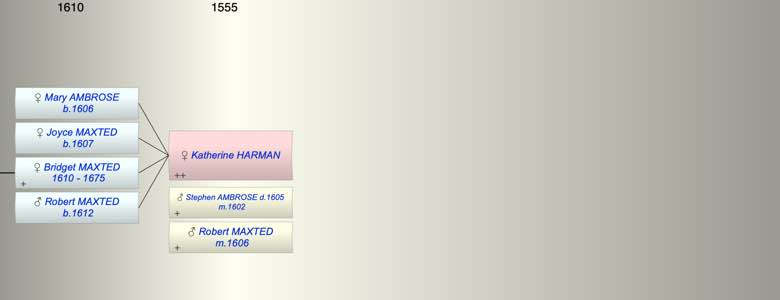

| [Index] |
| Katherine HARMAN |
|  |
| m. (1) 19 Jul 1602 Stephen AMBROSE ( - 1605) at St Martins Canterbury |
| m. (2) 22 Sep 1606 Robert MAXTED at Chilham |
| Children (4): |
| Mary AMBROSE (1606 - ) |
| Joyce MAXTED (1607 - ) |
| Bridget MAXTED (1610 - 1675) |
| Robert MAXTED (1612 - ) |
| Grandchildren (1): |
| Ann MAXTED (1633 - 1685) |
| Events in Katherine HARMAN's life | |||||
| Date | Age | Event | Place | Notes | Src |
| 19 Jul 1602 | Married Stephen AMBROSE | St Martins Canterbury | Note 1 | ||
| 1605 | Death of husband Stephen AMBROSE | Chilham | buried 1 Dec 1605 | ||
| 1606 | Birth of daughter Mary AMBROSE | Chilham | bap Chilham May 1606 | ||
| 22 Sep 1606 | Married Robert MAXTED | Chilham | Note 2 | ||
| 1607 | Birth of daughter Joyce MAXTED | Chilham | bap 31 Jan 1607/08 | ||
| 1610 | Birth of daughter Bridget MAXTED | Chilham | Note 3 | ||
| 1612 | Birth of son Robert MAXTED | Chilham | bap Chilham 20 Nov 1612 | ||
| 1675 | Death of daughter Bridget MAXTED (aged 65) | St Laurence | |||
| Personal Notes: |
| Nothing found before her marriage. |
| Created on a Mac™ using iFamily for Mac™ on 8 Oct 2023 |